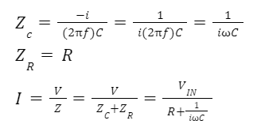
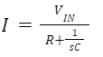
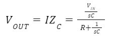
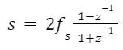
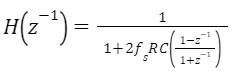
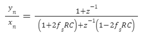

The circuit as seen in Fig. 2 can be treated as a potential divider with resistances (or in this case impedances) of Z_C & Z_R for the capacitor and resistor.

If we let s=iω=2πif
Now 
As the same current passes through the resistor and the capacitor, so the voltage across the capacitor is:

The substitution for the transform is:
 Where z−1represents one sample delay, such that
If we substitute this into our result for H(s) from appendix 1, we get:
This can be simplified down to:
Imagine we have 2 (arbitrary) decimal numbers, say 1000.942, and 50.95002. The product of these numbers is: 50998.01491884. Notice that the total length of the product is the sum of the lengths it's constituents, and the position of the decimal point is now 8 digits in, the sum of the positions of the starting decimal point positions.
Binary numbers work in the same way: 10010110 and 11000101 = 0111001101101110